Rancher Parte 2 – Instalação e configuração
Blog TutoriaisCompartilhe esse post nas redes sociais...
Olá Homelabers!
Essa é segunda parte da série sobre Rancher.
Se você perdeu a primeira parte, não tem problema! Acesse o link e veja o post e o vídeo com todos os detalhes sobre como fazer a preparação de um servidor Ubuntu, instalando o Docker para receber o Rancher Server, instalar o Rancher Server e configurar a autenticação local.
https://twitter.com/homelaber/status/948835714954915857
Hoje vou mostrar a vocês como:
* Configurar o Rancher Server
* Configurar e adicionar um host local no Rancher
* Fazer o deploy de containers
Configurando Environments (Ambientes) no Rancher
O que é um ambiente?
O Rancher suporta agrupamento de recursos em vários ambientes. Cada um com seu próprio conjunto de serviços e recursos de infraestrutura gerenciado por um ou mais usuários ou equipes.
Por exemplo, você pode criar ambientes separados de “dev”, “teste” e “produção” para manter as coisas isoladas e dar acesso ao ambiente de “dev” a todos os desenvolvedores, mas restringir o ambiente de “produção” a apenas ao time de produção.
Para configurar um novo ambiente:
Acesse o servidor do Rancher em http://:8080
Clique em Default » Manage Environments » Add Environment
Preencha os campos e clique em Create
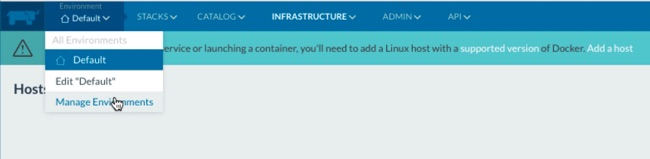 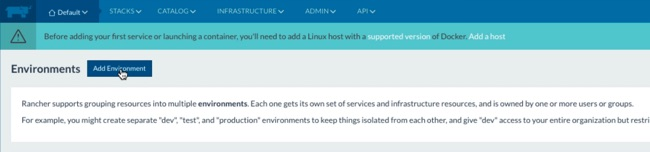 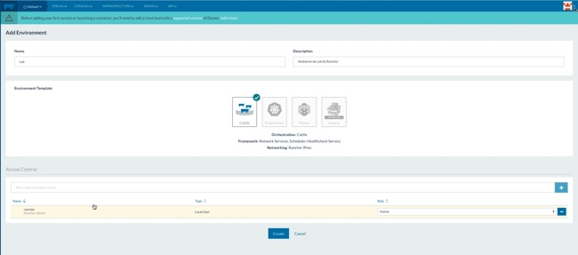
Adicionando Hosts no Rancher
O próximo passo da nossa configuração é adicionar um host “local” ao Rancher Server.
O que é um host? Antes de adicionar seu primeiro serviço ou iniciar um contêiner, você deve adicionar pelo menos um único host Linux que suporte o Docker e seja capaz de se comunicar com o servidor Rancher via HTTP. O Rancher suporta a adição de hosts Linux na forma de uma máquina virtual ou física de qualquer fornecedor de nuvem pública, nuvens local ou mesmo em servidores bare metal (físicos).
Em nosso lab, vamos utilizar um servidor Linux Ubuntu Server 16.04. Nesse post não vou mostrar como instalar o Ubuntu, mas deixo aqui um link com o passo-a-passo da instalação caso você tenha alguma dúvida.
Instalando o Docker
Antes de adicionar o host ao Rancher, vamos fazer a instalação do Docker utilizando um script de instalação fornecido pelo time da Rancher Labs para instalar o Docker na sua versão correta. Todos os comandos abaixo devem ser executados em seu Rancher Host.
$ sudo curl https://releases.rancher.com/install-docker/17.03.sh | sh
Esse comando faz o download de um script e inicia a instalação do Docker versão 17.03.
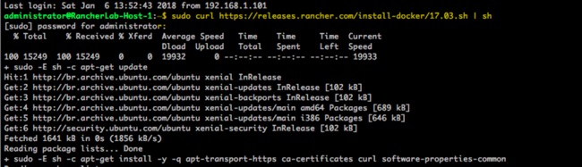
Ao final da instalação, você verá a seguinte tela, que mostra que o Docker versão 17.03.2-ce foi instalado e pergunta se você que executar o comando para evitar que você precise digitar “sudo” sempre que for rodando algum comando Docker. Em nosso lab, eu recomendo habilitar essa “funcionalidade” por questões práticas. Mas em seu ambiente de Produção, leia e pesquise sobre os riscos.
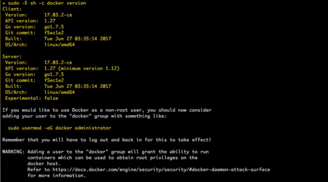
$ sudo usermod -aG docker $USER
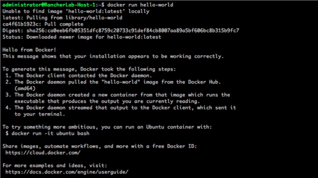
$ docker run hello-world
Esse comando irá criar um container para que você valide sua instalação. O resultado do comando é o apresentado abaixo:
O próximo passo, é configurar o Docker para inicializar junto com o SO, assim, se a sua VM reiniciar, o Docker será inicializado automaticamente.
$ sudo systemctl enable docker
**Para adicionar um host local: **
Com o seu host já preparado - Docker instalado e configurado, na tela principal do Rancher Server:
Clique em Infrastructure » Hosts » Add Host
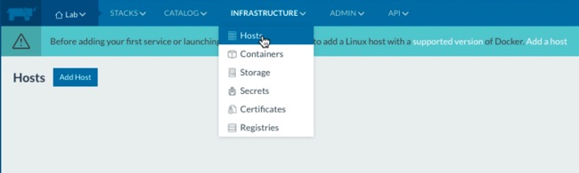
Selecione a opção Custom » Preencha o IP do servidor host (192.168.1.41 no exemplo) » copie o comando gerado » Close
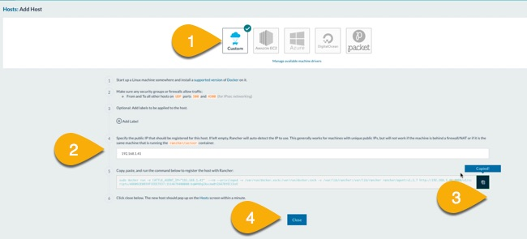
O próximo passo, é executar o comando gerado pelo Rancher em seu host:
sudo docker run -e CATTLE_AGENT_IP="192.168.1.41" --rm --privileged -v /var/run/docker.sock:/var/run/docker.sock -v /var/lib/rancher:/var/lib/rancher rancher/agent:v1.2.7 http://192.168.1.40:8080/v1/scripts/A8D092E0859FCEEE7D37:1514678400000:bqWHhDgZAxcmaBtZAA7BYECCUsE
O que esse comando faz é criar um container do Rancher Agent em seu host e apontar para o servidor Rancher.
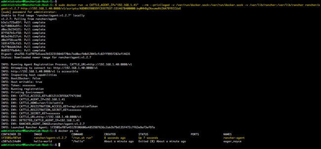
Após alguns minutos, o seu host já deve aparecer no painel do Rancher
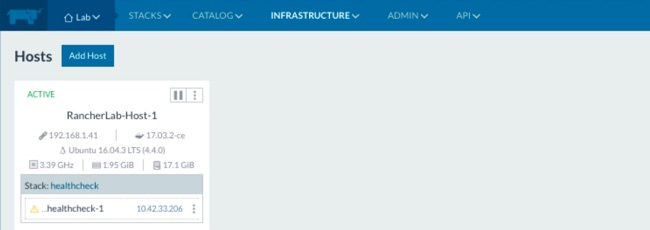
Criando o primeiro container no Rancher
Agora que nós já adicionamos o host ao nosso server Rancher, vamos criar um container.
O primeiro passo é clicar em INFRASTRUCURE » Containers » Add Container e preencher os campos:
* **Name**: Nome do container
* **Description**: Descrição do container
* **Select Image**: Imagem Docker que você quer utilizar.
* **Public Host Port**: Porta pública da sua aplicação
* **Private Container Port**: Porta privada da sua aplicação/container.
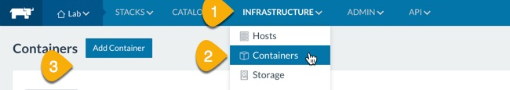 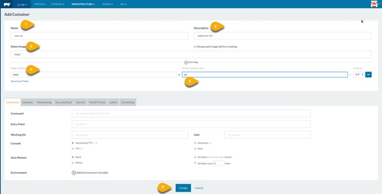
Após isso, clique em Create e em alguns segundos o seu container estará criado e rodando.
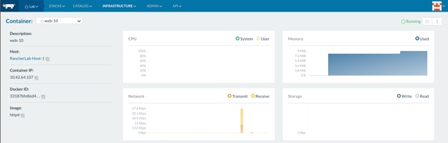
Próximos passos
Nesse post, falamos sobre a configuração de Environments no Rancher, o setup e preparação de um servidor Ubuntu para se tornar um host Rancher, como adicionar o host ao Rancher e como fazer o deploy de um container simples.
No próximo e último post da série, irei abordar os seguintes assuntos:
* Provisionar hosts no VMware vSphere.
* Provisionar hosts na cloud Amazon AWS.
Bom pessoal, por hoje é isso! No vídeo demonstro mais algumas coisas como o catálogo de aplicações do Rancher e outras dicas. Não deixe de assistir.
[embed]https://youtu.be/Bh7XS51VmTw[/embed]
Deixe ai nos comentários o que você está achando da série! Se você já está colocando em prática o que aprendeu aqui!
Um abraço e até o próximo post!
Compartilhe esse post nas redes sociais...Valdecir Carvalho
Nerd e pai orgulhoso da Mariana e João. Profissional Sênior de TI com foco em arquitetura de infraestrutura e cloud computing. Blogueiro, podcaster, palestrante, amante de comunidades técnicas, fotógrafo aposentado e adora jogos antigos.
#vExpert · #VMUGLeader · #VUGBrasil · #vBronwBagBrasil · #VeeamVanguard